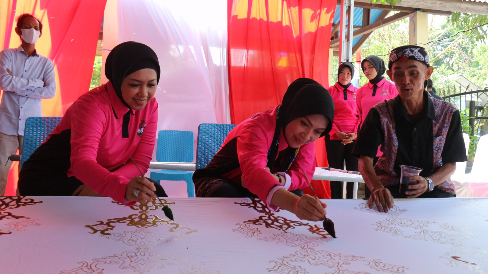
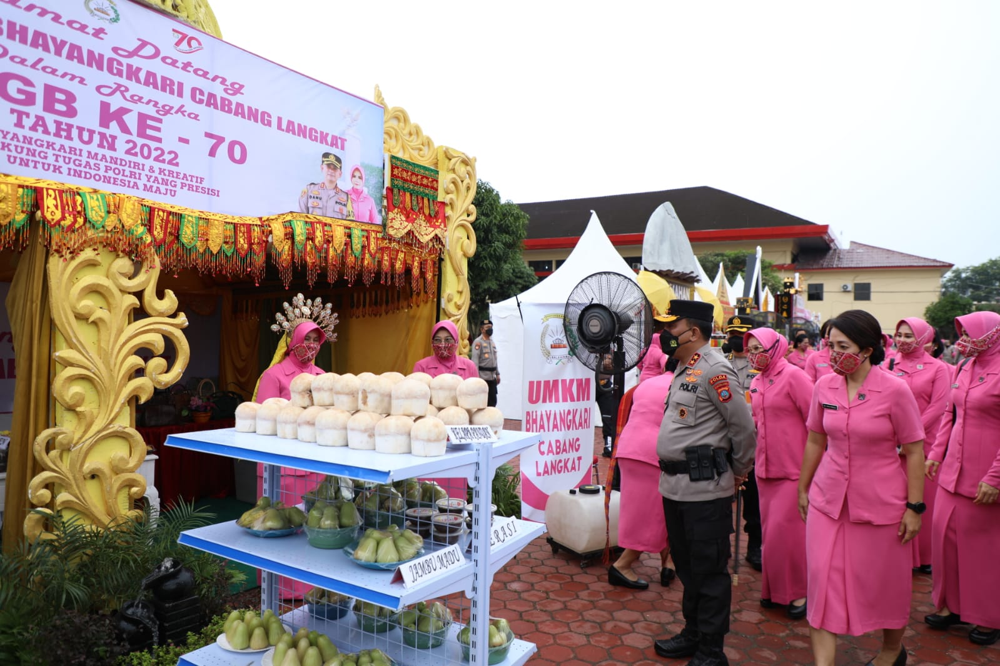
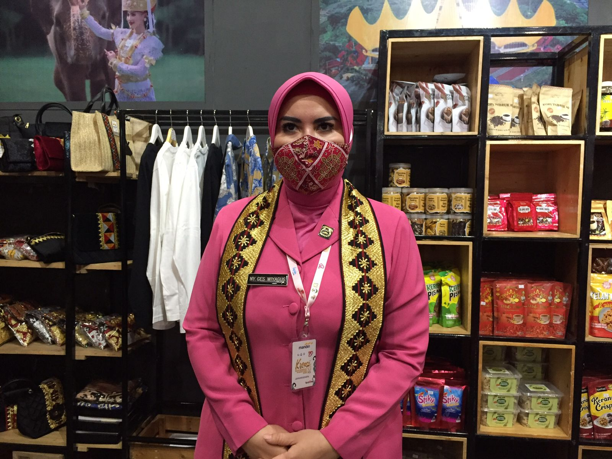
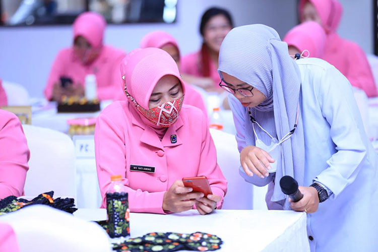

Motto
“Bhayangkari Bergerak Bersama untuk Indonesia Maju”.

Bhayangkari adalah organisasi yang menghimpun para istri anggota Kepolisian Negara Republik Indonesia (Polri). Selain bergerak di bidang sosial dan kekeluargaan, para anggota juga aktif mengembangkan kegiatan ekonomi produktif.
UMKM Bhayangkari adalah wadah pemberdayaan ekonomi bagi para anggota untuk memasarkan hasil usaha mereka, mulai dari makanan olahan, kerajinan, hingga produk fashion. Melalui wadah ini, anggota dapat saling berbagi pengalaman, mengikuti pelatihan, dan memperluas jaringan pemasaran.
Website ini merupakan profil singkat yang menampilkan informasi tentang organisasi, daftar produk beserta harganya, dan informasi kontak.
Bhayangkari adalah Persatuan Istri Anggota Polri. Nama Bhayangkari berasal dari kata Bhayangkara, sebutan untuk Kepolisian, dan menggambarkan peran para istri yang mendampingi dan mendukung pengabdian suami dalam keluarga maupun masyarakat.
“Bhayangkari Bergerak Bersama untuk Indonesia Maju”.
“Bersama Bhayangkari wujudkan keluarga Polri yang sehat, mandiri, dan berdaya.”
Wadah anggota untuk mandiri secara ekonomi: berlatih, berproduksi, dan memasarkan karya bersama.
Website UMKM Bhayangkari terdiri dari tiga halaman. Berikut gambaran singkat isi masing-masing halaman agar Anda mudah menemukan yang dicari.
Profil organisasi, visi & misi, para ibu Bhayangkari, dan bidang kegiatan UMKM.
Anda di sini ✓ 02Daftar produk kuliner, kerajinan, dan fashion lengkap dengan kategori, satuan, dan harga.
Lihat produk → 03Alamat, nomor telepon/WhatsApp, jam layanan, dan formulir untuk mengirim pesan atau pesanan.
Hubungi kami →Keluarga yang sehat menjadi dasar anggota untuk beraktivitas dan berkarya.
Mendorong anggota berwirausaha dan memiliki penghasilan sendiri.
Meningkatkan keterampilan, pemasaran digital, dan jejaring kerja sama.
Menjadi wadah UMKM yang mandiri, kreatif, dan berdaya saing untuk meningkatkan kesejahteraan keluarga anggota.
Kegiatan ibu anggota Bhayangkari menjadi penggerak utama UMKM, dari pengolah makanan, pengrajin, hingga pendamping pelatihan.

Tiga hasil bidang utama tempat para anggota berkarya dan berkembang bersama.

Aneka makanan dan minuman olahan rumahan yang higienis dan berkualitas.

Produk kerajinan tangan, batik, dan busana hasil karya anggota.

Pelatihan usaha, pengemasan produk, dan pemasaran melalui media digital.
Sampaikan minat Anda melalui halaman Kontak.
Kirim nama produk, satuan, dan harga untuk dicantumkan di halaman Produk & Harga.
Ikuti pelatihan pengemasan dan pemasaran digital bersama anggota lain.
Produk dipromosikan melalui kegiatan dan media Bhayangkari.
Wadah pemberdayaan ekonomi bagi anggota Bhayangkari untuk memasarkan hasil usaha, mulai dari makanan olahan, kerajinan, hingga fashion.
Para anggota Bhayangkari yang memiliki usaha. Hubungi kami melalui halaman Kontak untuk keterangan lebih lanjut.
Daftar produk dan harga contoh tersedia di halaman Produk & Harga.
Silakan kirim pesan atau hubungi kami melalui halaman Kontak.
Ingin mengetahui produk dan harganya? Silakan kunjungi halaman Produk & Harga, atau hubungi kami melalui halaman Kontak.